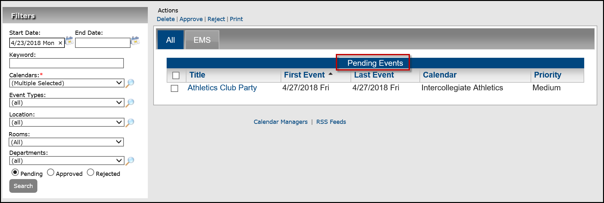

From the Manage Events page, authorized users can delete an event request of any status: pending, approved, or rejected.
Optionally, filter the list of pending events.

Manage Events Page
Select the events you want to delete. To select all events on the currently opened page for deletion in a single step, select Title. If you have multiple pages of events to delete, you must repeat this entire process on each page.
To have Master Calendar automatically generate and send emails indicating the event status (approved or rejected), your site administrator must have set the default System Configuration settings for email: name of sender, SMTP server, and address of sender. If your system is not automatically sending and generating emails after you approve or reject an event request, work with your site administrator to ensure that the necessary default settings have been specified.
Under Actions, click Delete. A message opens asking you if you are sure that you want to delete all selected events.
Click OK in the message. A message opens indicating that all selected events were deleted.
Click OK in the message. The appropriate tab (Approved, Reject, or Deleted) is updated to reflect the deletion of the event requests.